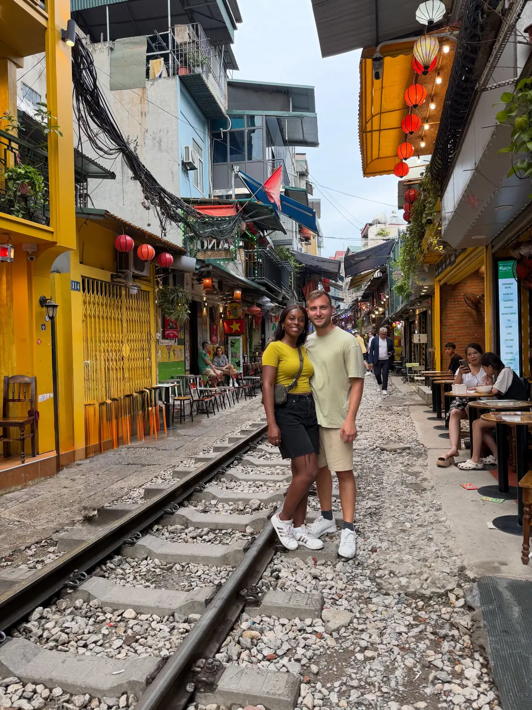

Hanoi · Most iconic01
The famous Train Street
📍 Train Street · Old Quarter (near Le Duan)
A working railway line running straight between rows of tiny cafés, so narrow you can touch both sides. You grab an egg coffee or a beer at a trackside table, and a few times a day a real train roars through while the staff wave everyone back against the wall — there's a clip of exactly that further down. It's the most Hanoi thing we did. Check the train times when you arrive (the cafés know them) so you're there for a pass-through, and always listen to the staff.
Come for a train timeEgg coffee trackside